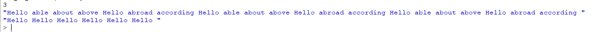

Виведення результату співпадає з умовами задачі, отже все правильно. Всі дані записуються в файли на читаються з них вірно.
київський національний університет ім. Тараса Шевченка
факультет інформаційних технологій
кафедра програмних систем та технологій
Дисципліна
Функціональне програмування
Лабораторна робота №7
"Обробка рядків та файлів мовами функціонального програмування "
Варіант 15
Виконав: Мухатасов Борис Євгенович
Перевірила: Ніколаєнко Анастасія Юріївна
Зміст
Мета
Опанувати теоретичні основи обробки рядків та текстових файлів мовами функціонального програмування та розробити програми їх реалізації
Умови задачі
Записати в текстовий файл n рядків тексту, що задаються програмою на функціональній мові програмування. Зчитати рядки із створеного програмою файлу, вивести їх на екран. Видалити з тексу усі стоп слова. Записати в новий текстовий файл результат обробки тексту.
Структура програми
Рис. 1 - HIPO діаграма до завдання
Обгрунтування вибору середовища та мови функціонального програмування
Була обрана мова програмування Scheme, так як вона має легкий, зрозумілий синтаксис, який поюснюють на лекціях, практичних, а також рекомендована лектором. IDE - DrRacket. Головною перевагою для вибору данного середовища розробки є зручність та відсутність потреби у мережі інтернет
Код програми
(define start-str "Hello able about above Hello abroad according ")
(define N(read))
;Запис рядків
(define (_write str port n)
(define res "")
(define (inside i)
(if (< i n)
(begin
(set! res (string-append res str))
(inside (+ i 1)))
(write res port)))
(inside 0))
;Ф-я запису у файл
(define (write-to-file path str n)
(define port (open-output-file path))
(_write start-str port n)
(close-output-port port))
;Ф-я читання з файлу
(define (read-from-file path)
(define file (open-input-file path))
file
(define temp (read file))
(close-input-port file)
temp)
;Ф-я розбивання тексту на слова
(define (to-substring str)
(define res `())
(define temp "")
(define (inside i)
(define symbol "")
(if (>= i (string-length str))
res
(begin
(set! symbol (substring str i (+ i 1)))
(if (string=? symbol " ")
(begin
(set! res (append res (list temp)))
(set! temp ""))
(if (or (string=? symbol ".") (string=? symbol ","))
(begin
(set! res (append res (list temp) (list symbol)))
(set! temp "")
(set! i (+ i 1)))
(set! temp (string-append temp symbol))))
(inside (+ i 1)))))
(inside 0))
;Порівняння і видалення слів
(define (comparing lst lst-stop)
(define (inside i j)
(if (>= i (length lst))
lst
(if (>= j (length lst-stop))
(inside (+ i 1) 0)
(begin
(if (string=? (list-ref lst i) (list-ref lst-stop j))
(begin
(set! lst (delete lst i))
(set! i (- i 1))))
(inside i (+ j 1))))))
(inside 0 0))
;Ф-я видалення слова в списку слів
(define (delete lst ind)
(define res `())
(define (inside i)
(if (>= i (length lst))
res
(begin
(if (not(= ind i))
(set! res (append res (list (list-ref lst i)))))
(inside (+ i 1)))))
(inside 0))
;Функція формування строки с списку
(define (list>string lst)
(define res "")
(define (inside i)
(if (>= i (length lst))
res
(begin
(set! res (string-append res (list-ref lst i) " "))
(inside (+ i 1)))))
(inside 0))
;Записуємо у файл
(write-to-file "D:\\учеба\\4 курс\\ФП\\Лабы\\files\\output.txt" start-str N)
;Читаємо з щойно записаного файлу
(define newstr (read-from-file "D:\\учеба\\4 курс\\ФП\\Лабы\\files\\output.txt"))
newstr
(define newstr-words (to-substring newstr))
newstr-words
;newstr-words
;читаємо словник стоп-слів
(define stop (read-from-file "D:\\учеба\\4 курс\\ФП\\Лабы\\files\\stop-words.txt"))
stop
(define stop-words (to-substring stop))
stop-words
;stop-words
(define result (comparing newstr-words stop-words))
(set! result (list>string result))
result
(write-to-file "D:\\учеба\\4 курс\\ФП\\Лабы\\files\\result.txt" result 1)
Посилання на проект з вихідним кодом
GitHub проект з вихідним кодом до всіх лабораторнихСкріншоти результатів

Рис. 2 - Результат виконання завдання
Рис. 3 - Результат виконання завдання
Аналіз достовірності результатів
Висновки
В результаті роботи було вирішено два задання за допомогою мови Scheme. Було намальовано HIPO діаграми для кожного з завдань, проведено аналіз достовірності результатів, який показав що результати є вірними. Отримано практичні навички обробки тексту, текстових файлів мовой функціонального програмування.